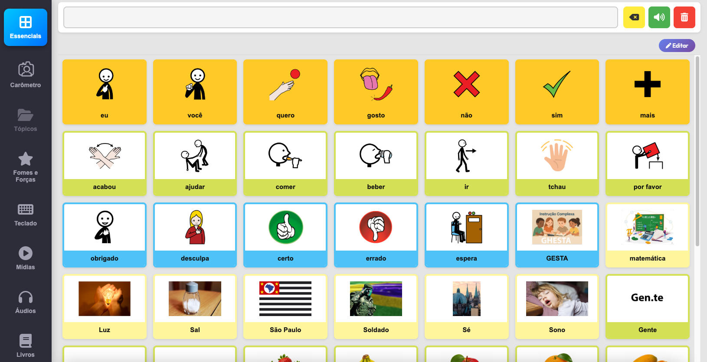

Essenciais
Palavras e ações do dia a dia para respostas rápidas de alta visibilidade.
Comunicação aumentativa com autonomia
O Comunica Fácil apoia os treinos de pessoas com afasia com vocabulário visual, tópicos organizados, mídias personalizadas e uma experiência simples para uso diário.
A grade abaixo representa como o Comunica Fácil organiza palavras e ações em blocos grandes, com alto contraste e leitura imediata para apoiar pessoas com afasia e seus cuidadores.

O Comunica Fácil foi criado para apoiar pessoas com afasia no treino da comunicação. A página apresenta o objetivo do app, mostra como ele ajuda no dia a dia e guia o usuário para o login sem complicação.
Cada área existe para reduzir esforço visual e acelerar o acesso ao que importa no treino diário.
Palavras e ações do dia a dia para respostas rápidas de alta visibilidade.
Conteúdo organizado por categorias para facilitar a navegação e treino focado.
Vídeos, áudios e cards personalizados para reforço visual e de pronúncia.
A afasia pode dificultar falar, compreender, ler e escrever. Por isso, o Comunica Fácil foi pensado para oferecer suporte visual e atividades que ajudem no treino da comunicação.
A landing mostra o propósito do Comunica Fácil, explica a afasia de forma breve e conduz para o login sem poluição visual.